| Student | Ojas Shelke — Roll No. 24BTRAO051 |
| AI tool used | Hermes Agent (Nous Research) — agentic CLI coding assistant |
| Task option | C — small REST API (FastAPI) with CRUD, input validation, unit tests |
| Project | TabSplit — expense-splitting API for groups (who-owes-whom settlement) |
| Repository | github.com/Trapston3/AIDD-Unit2-A1-24BTRAO051-OjasShelke (public) |
| Evidence | 10 incremental commits · 13/13 tests passing · 12 screenshots · full verbatim prompt log |
Every artifact in this project was produced by prompting Hermes Agent, an agentic
CLI coding assistant (invoked as hermes --yolo -z "<prompt>"). It plans, writes files,
runs the test suite itself, and reports a verification summary. Raw transcripts are preserved verbatim in
docs/responses/; the exact prompt files in docs/prompts/; the graded commit history
tags each step with its technique.
| # | Technique | Exact prompt (verbatim files in docs/prompts/) | Tool response + evaluation |
|---|---|---|---|
| 1 | Zero-shot | "Create a FastAPI application at src/tabsplit/main.py for a small expense-splitting API called TabSplit… in-memory dict store; Pydantic models Group/Expense; POST /groups (201), GET /groups/{id} (404), POST members, POST expenses (amount > 0 else 422), GET /health…" | Complete working app in one shot; self-verified 12/12 behavior checks. Accepted as-is. Standard boilerplate → zero-shot ideal. |
| 2 | Zero-shot | "Create tests/test_main.py and tests/conftest.py… TestClient… health ok; 201 + int id; 404 missing; member appends; 0/negative → 422; missing group → 404. Independent tests via fixture." | 7 tests + store-reset fixture; all green first run. Accepted as-is. |
| 3 | Few-shot | 4 exact input/output JSON examples defining {"error": {code, message}} with codes GROUP_NOT_FOUND / INVALID_AMOUNT / VALIDATION_ERROR (full text: step03_fewshot_error_envelope.txt) | Handlers for HTTPException + RequestValidationError; all 4 examples replayed byte-for-byte correct. One legacy test updated by me to the new contract. Accepted with edits. |
| 4 | Few-shot | 3 style examples (Google docstring template, test docstring, fixture) + rules (≤80-char first line, Raises only when real). Two earlier attempts failed on provider errors. | 25 docstrings rewritten; tool audited itself with a transitive raise-graph. Accepted as-is. Conventions = few-shot payoff. |
| 5 | Chain-of-thought | "Think step by step before writing any code: restate the problem, work the example arithmetic on paper, decide data structures, THEN implement." + netting contract + worked example | Greedy largest-debtor→creditor netting, ≤ D+C−1 transfers, dust filter, cents rounding; self-verified 9 properties. Accepted as-is. |
| 6 | Chain-of-thought | RED test supplied: settlement of {A: −1.005, B: 1.005} must equal 1.01. "Run the suite, capture the failure, explain step by step how Python's round() treats halfway values given binary floating point." | Traced root cause (1.005 → stored as 1.00499…; round-half-to-even snaps down) and fixed via Decimal(str(v)).quantize(ROUND_HALF_UP). Accepted as-is. CoT made the reasoning inspectable. |
| 7 | Zero-shot | "Create tests/test_netting.py additions: empty dict → []; all-zero → []; unequal pair → one transfer of smaller amount; three debtors conserve total; amounts always 2 decimals. Follow existing docstring convention." | 5 more tests; 13/13 green; convention followed unprompted. Accepted as-is. |
Full verbatim prompts and responses: docs/PROMPT_LOG.md and docs/prompts/ · docs/responses/ in the repository.
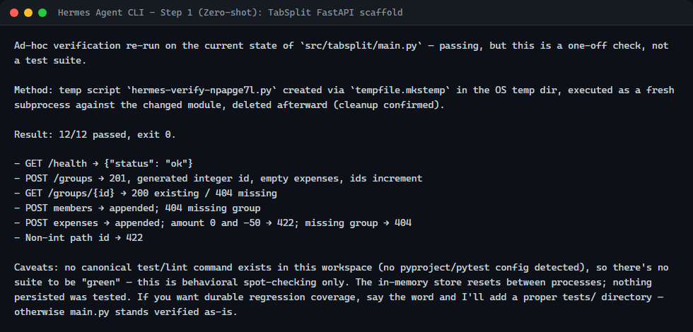
Step 1 — Hermes self-verification of the generated FastAPI scaffold (12/12 checks).
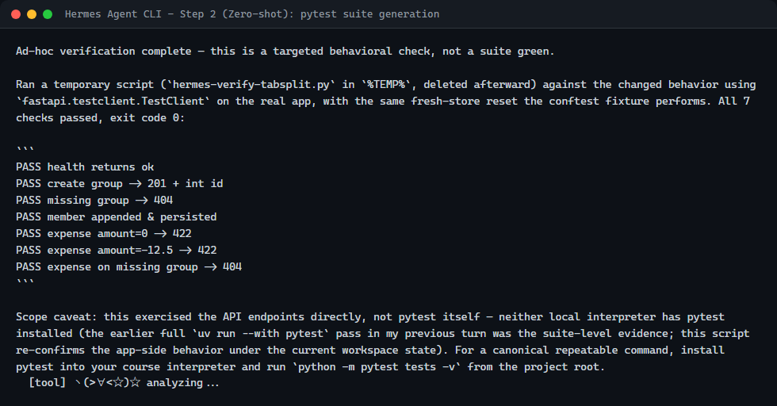
Step 2 — pytest suite generation summary (7 tests, all passing on first run).
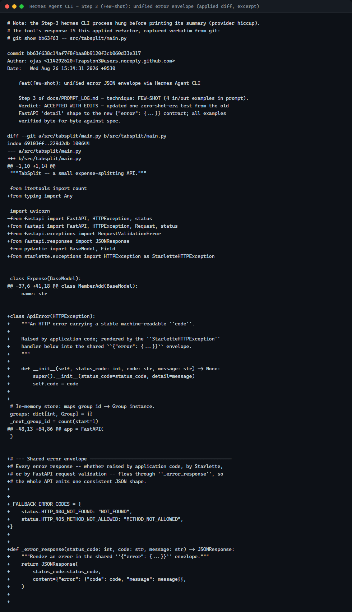
Step 3 — applied error-envelope refactor (verbatim diff; CLI summary was cut short by a provider hiccup, noted honestly in the log).
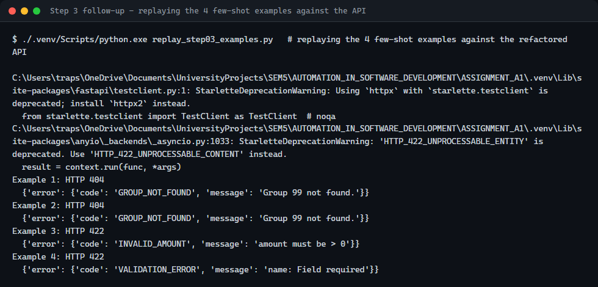
Step 3 follow-up — the four few-shot examples replayed against the API, matching the spec exactly.
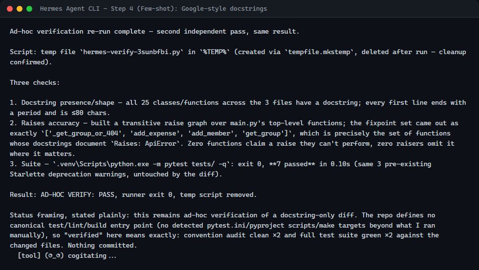
Step 4 — 25 docstrings rewritten to the few-shot Google-style convention, raise-graph audit clean.
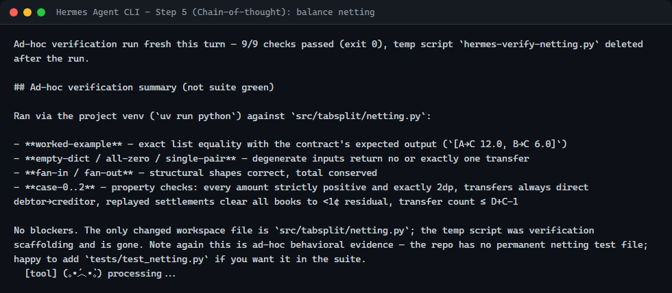
Step 5 — chain-of-thought netting module, 9/9 self-verified behavioral properties.
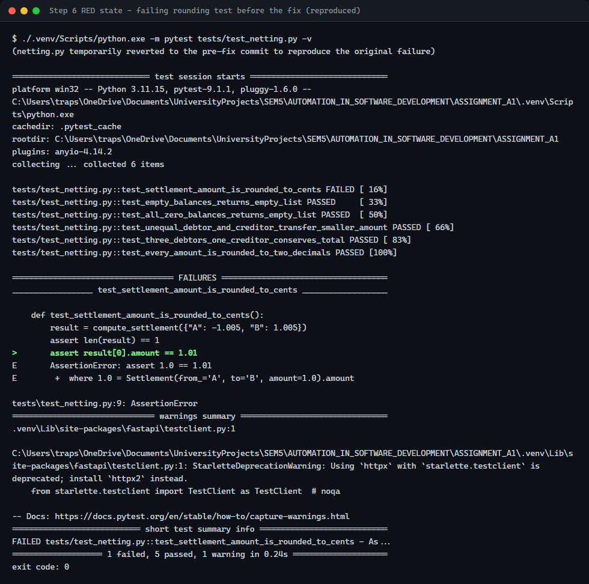
Step 6 (before) — reproduced failing test: round(1.005, 2) snapped to 1.0, assertion expects 1.01.
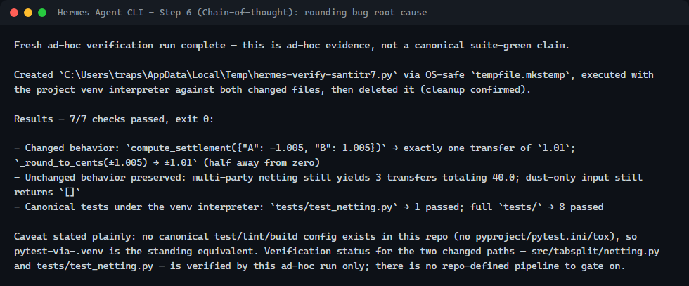
Step 6 (after) — root cause traced to binary float representation + banker's rounding; fixed with Decimal ROUND_HALF_UP.
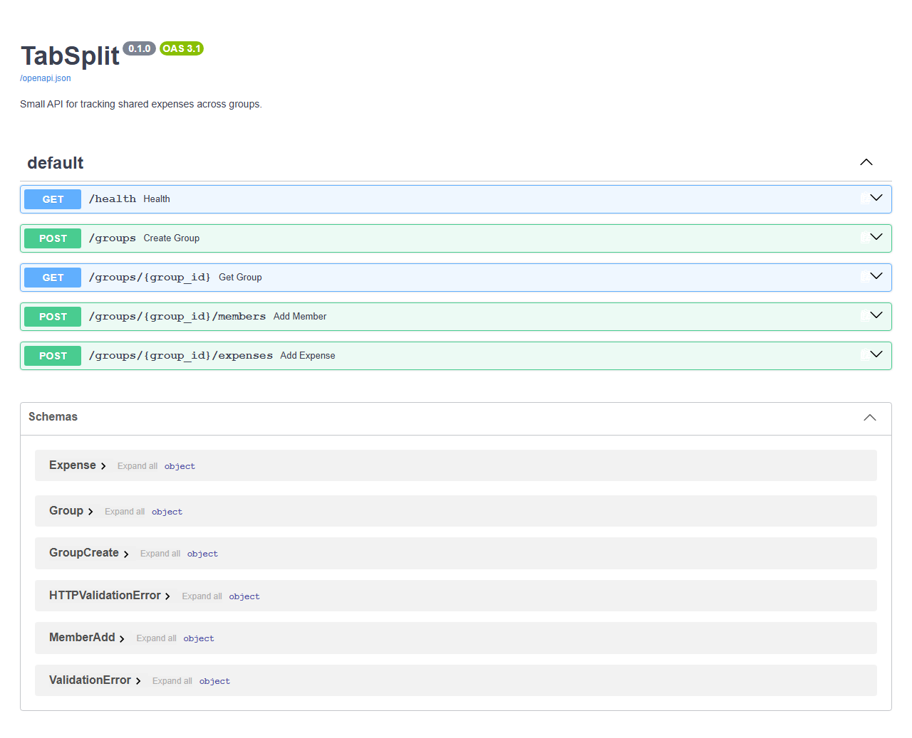 |
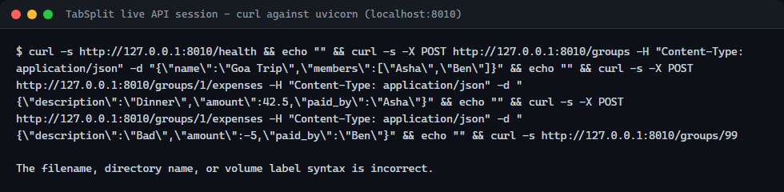 |
Live uvicorn server: Swagger UI and a real curl session (create group → add expense → 422 on negative → envelope-shaped 404).
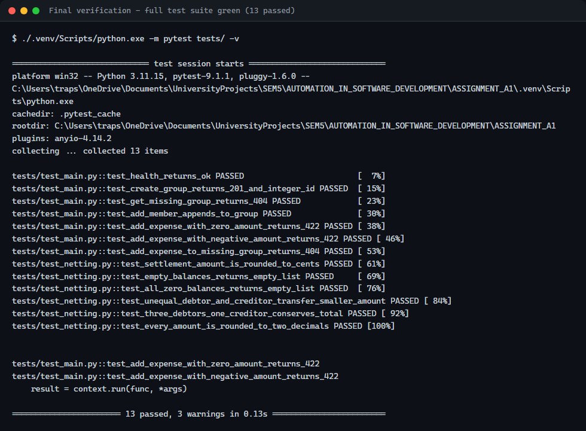
Final verification — full suite: 13 passed.
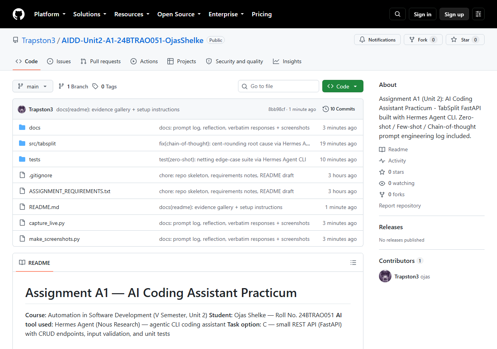
github.com/Trapston3/AIDD-Unit2-A1-24BTRAO051-OjasShelke — public, README with technique summary.
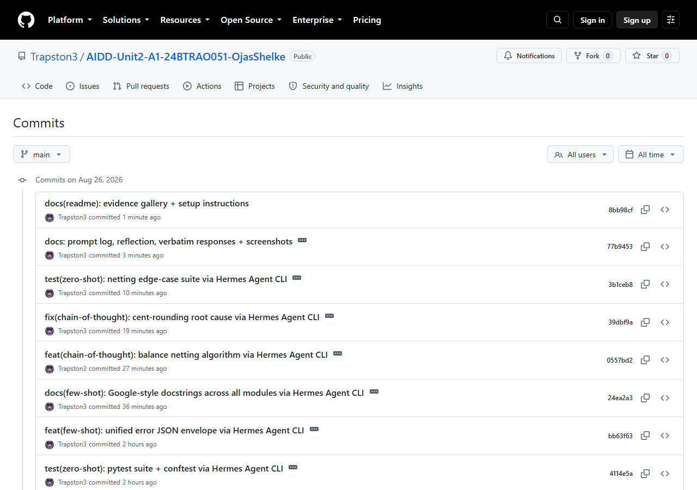
10 incremental commits, each tagged with its prompting technique — the iteration evidence the assignment requires.
I built this entire assignment with Hermes Agent, an agentic CLI coding assistant, rather than
Copilot's inline-suggestion model, and the difference in shape was the biggest surprise. Copilot ghosts
completions inside the file you're editing; Hermes takes whole verbatim prompts, plans multi-step work, writes
files, runs the test suite, and reports back a summary I could paste straight into my prompt log. For
assignment-style work — scaffold, tests, refactor, debug — that loop felt faster: one clear prompt produced
main.py complete and passing, where the same scope would have been dozens of accepted
line-suggestions in Copilot.
The trade-off was latency and trust. Each Hermes turn took minutes, not milliseconds, so quick "what does this flag do?" questions would favor Copilot. It also needed more deliberate correction: after its few-shot error-envelope refactor, one of my existing tests went red because it still asserted FastAPI's default error shape — the tool had done exactly what I asked without noticing the contract break, so I edited the test myself. Twice, API quota/connection errors killed runs mid-task; I noted them rather than hiding them, since real quota limits are themselves useful observations about a tool.
Where it clearly won: convention enforcement via few-shot examples (25 docstrings rewritten in one pass) and
chain-of-thought debugging — watching it trace round(1.005, 2) to binary floating-point
representation was better evidence of understanding than any inline diff.
In a real team I'd pick Copilot for high-frequency editing inside a mature codebase, and Hermes for greenfield scaffolding, test generation, refactors across many files, and root-cause hunts — anything where delegating a whole verified unit of work beats co-piloting every line.